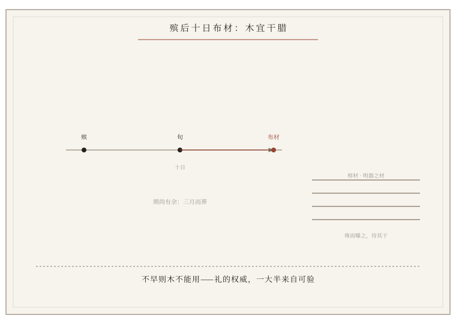

檀弓上 · 三·一百零七 · 第 310 课
既殡旬，而布材与明器。
说什么事：殡后十日，就把椁材与送葬明器之材，张榜告下、开始置办。
落在哪一层：豫备。论「木宜干腊，故豫须暴之」。
为何编在此位：上三课皆是「当下之事」（复、奠、巾），此课是「将来之事」——殡后第十日，人还在殡宫，已经在备坟里的木头。
【经】既殯旬，而布材與明器。
【注】木工宜乾臘，且豫成。材，椁材也。
【疏】此一节论葬礼须豫备之事。「既殡旬」，谓殡后十日也。「而布材与明器」者，「布」，班也；「材」谓椁材也。殡后十日，而班布告下觅椁材，及送葬明器之材。或云布其木宜乾腊，故豫须暴之也。《士丧礼》筮宅吉，左还椁，献明器之材于殡门外，是也。
既殡旬 殡后满十日。旬，十日。
布 疏「班也」，张榜、颁布。此处是下发征材之令。
材 椁材。注「材，椁材也」。
明器 送葬之器。
乾腊 干燥。腊，干。木须干，方可用。
暴 曝晒。疏「豫须暴之」。
左还椁 疏引《士丧礼》语。还，绕；左还，自左而绕视椁材。
殡后十日，就张榜征办椁材与明器之材。
此节讲的是「提前多久」。
殡后十日，人刚刚安顿下来，丧事的主体（哭、奠、吊）还在进行。此时就要办坟里的木头了。注给的理由两条：木工宜干腊，且豫成。
第一条是物理的：新木含水，易朽易变形，须先干。干了才能用，用了才耐久。这一条决定了「必须早」——不是礼要早，是木头要早。
第二条是行政的：豫成。材有尺寸，须择、须锯、须合，非一日之功。殡后十日发令，到葬期三月，中间还有两个多月，正好够。
疏又引《士丧礼》一条：筮宅得吉，左还椁，献明器之材于殡门外。这是说，材到了之后还要献于殡前——让死者「看一看」。这一层最见礼意：备材是给死者的，材到了，要告一声。
第一层 两种「早」 306 的六事并作，是「来不及」的早；此节的殡后十日布材，是「算得过来」的早。前者是被动，后者是主动。礼同时处理这两种时间：一种不容谋划，一种必须谋划。
分辨二者，是读礼书的一个关节。凡言「并作」「急」「不及」者，是身体在逼；凡言「豫」「先」「旬」「期」者，是人事在算。
第二层 「干腊」的物质性 注把理由落在木头的干湿上，很朴素，也很硬。礼不是靠「应当早」来立规矩，是靠「不早则木不能用」来立规矩。这类条文在礼书中极多：棺椁之厚薄、封之高度、椁材的干湿——皆可量、可验。
礼的权威，很大一部分来自这种可验性。
第三层 献材于殡门外 疏引《士丧礼》，材到之后献于殡门外。人已死，为何还要「献」？这一献，不是给死者的，是给生者的：它使「备后事」这件事，纳入丧礼的仪节之内，不至于变成背着死者的私下安排。
礼不许人偷偷办后事。凡为死者所备，都要在他面前过一道。
第四层 与「耻具」的分寸 273 节「丧具，君子耻具」——不到死不肯备齐。此节殡后即布材。二者不矛盾：所耻者是生前预办整套丧具，所许者是死后按节办。分界在「生前」与「死后」：生前备，是催；死后备，是办。
与今日何干 今人办丧，也在殡后算日子：墓地、石材、碑文、火化排期。此节给的提醒有两条：材料要早订（有物理期限）；订了要在灵前过一道（不背着人办）。
| 左 | 右 |
|---|---|
| 既殡旬 | 殡后十日 |
| 布 | 班布征办 |
| 材 | 椁材 |
| 明器 | 送葬之器 |
| 木工宜干腊 | 物理之限 |
| 豫成 | 人事之算 |
| 献于殡门外 | 在死者前过一道 |
| 三月而葬 | 期尚有余 |
画一处殡宫之外的庭院，视点平视。院中左侧堆着一排长短不齐的木料（只画木材断面与叠放轮廓，三四层），木料间插着几根支杆使其通风。右侧是殡宫之门，门前站着两名持简的吏者（背向或侧身，一人正在木料上贴一片小木牌）。院外远处可见一片空地，地上划着一道长形浅坑的线（示意椁地已定）。不写文字、不画人面细节。赭色只用在木料堆顶层那一根的主干，与吏者手中的小木牌。
